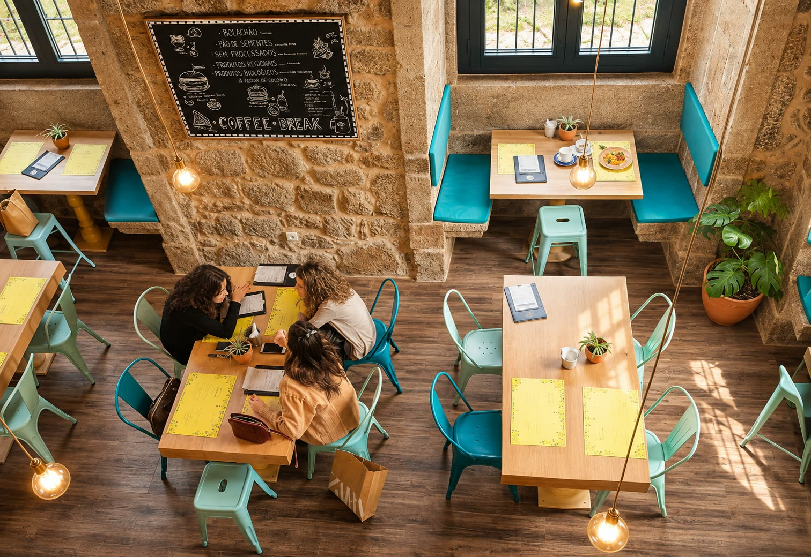
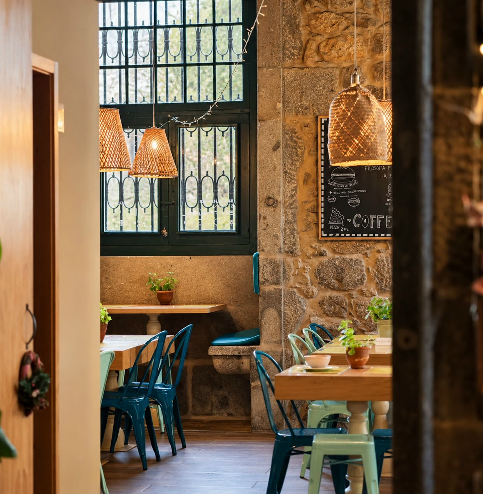
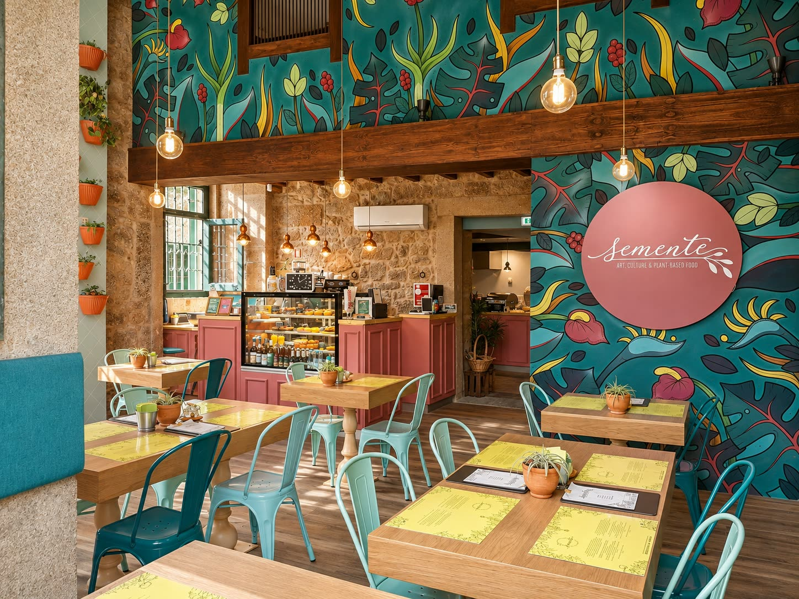
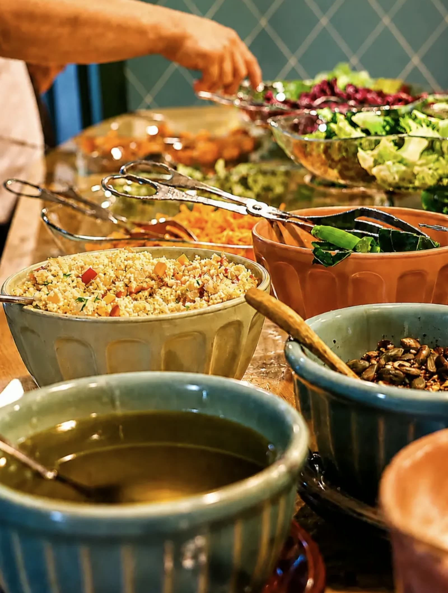
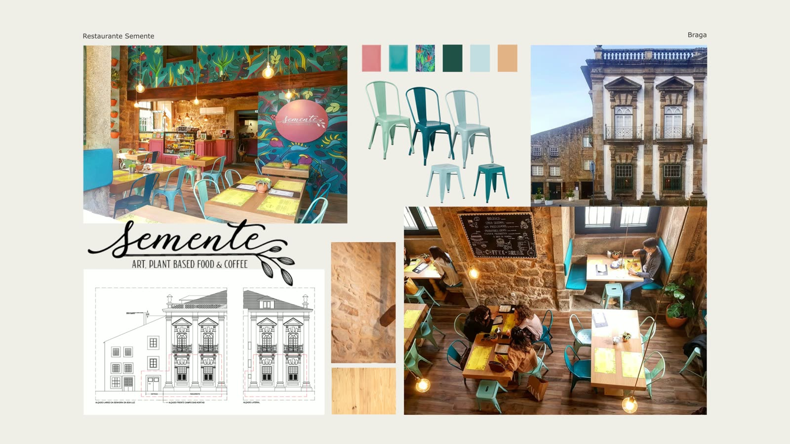

Braga
Restaurante Semente
Este foi um daqueles projetos que guardo com um carinho especial, não só pelo resultado, mas sobretudo pelas pessoas com quem tive a oportunidade de trabalhar.
A renovação deste espaço de restauração macrobiótica, no coração de Braga, nasceu da vontade de dar vida a uma visão muito própria. A proprietária tinha ideias muito concretas sobre aquilo que imaginava e uma enorme vontade de criar um espaço colorido, original e cheio de vida e criatividade. O meu papel foi ajudá-la a organizar essas ideias, orientar as escolhas e tornar o que tinha sonhado numa realidade.
Uma das coisas mais especiais foi dar vida ao painel que ela imaginava desenhado diretamente nas paredes. Um elemento cheio de carácter, que contribuiu para a identidade do espaço e tornou o resultado ainda mais único.
Foi um projeto muito divertido, num edifício com história, onde a cor, a criatividade e a vontade de fazer algo diferente se encontraram. Acima de tudo, foi uma colaboração bonita, feita de partilha, confiança e do entusiasmo de trabalhar com alguém que sabia exatamente o que queria transmitir.
Porque, para mim, decorar também é isto: ouvir, compreender a visão de quem nos procura e encontrar a melhor forma de a tornar realidade.
Braga



Design de interiores — Line and Linen
Direção de projeto — Alexandra Martins
Braga, Portugal